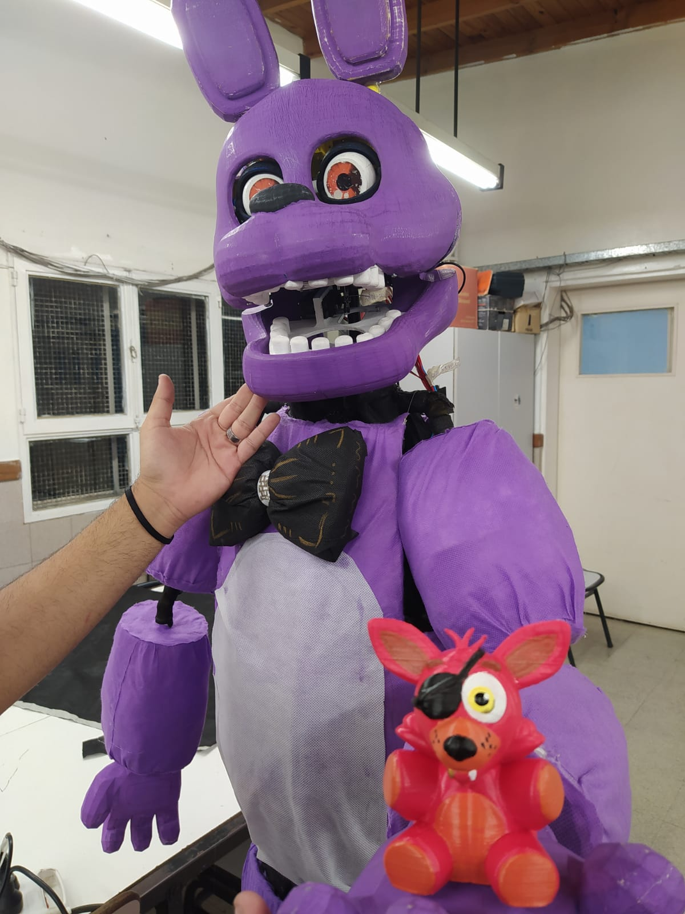
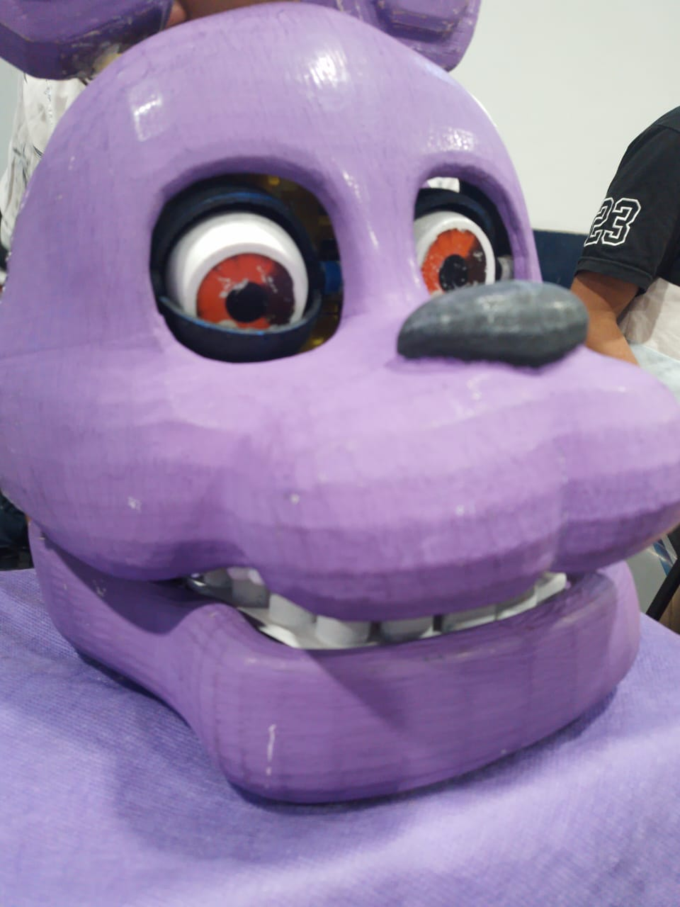

Galería



Un asombroso robot Animatronico programable inspirado en el mundo de Five Nights at Freddy's. Fabricado con impresión 3D y controlado por Arduino. Un proyecto que fusiona aprendizaje, tecnología y diversión.
El proyecto Bonnie es un conejo animatrónico desarrollado por los estudiantes de séptimo año. Con una cabeza impresa en 3D y un cuerpo artesanal, Bonnie tiene la capacidad de mover los ojos y la boca, todo controlado por Arduino.
Durante el proceso de construcción, utilizamos diversas habilidades y conocimientos de distintas materias para dar vida a Bonnie. La combinación de tecnología y creatividad resultó en un proyecto único.
Parpados separados de la cabeza.
Movimiento de la Boca.
Primera prueba.